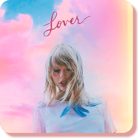
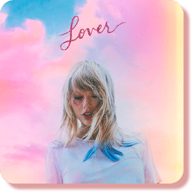

Taylor Swift's "Lover" album, released in 2019, played a pivotal
role in the evolution of her music into what fans have
colloquially referred to as the "psycho era." The album as a
whole explored themes of love, nostalgia, and self-discovery,
but it was specific tracks like "Cruel Summer," "Lover," and
"Me" that truly embodied the shifting sonic and thematic
landscape. "Cruel Summer," with its pulsating beats and
emotionally charged lyrics, captured the intensity and
complexities of relationships, setting the stage for the darker
undertones that would come to define the subsequent albums.
The titular track, "Lover," showcased a more mature and nuanced approach to love, while "Me" marked a departure from the conventional romantic narratives, emphasizing self-love and individuality. These songs, with their blend of pop sensibilities and intricate storytelling, laid the groundwork for the introspective and moody sound that characterized the psycho era.
Swift's musical trajectory took a fascinating turn with "Folklore," released in 2020. The album embraced a more indie-folk aesthetic and introduced tracks like "cardigan" and "august," which delved into introspective narratives and ethereal soundscapes. "Cardigan" in particular, with its wistful lyrics and haunting melodies, signaled a departure from the mainstream pop sound, paving the way for the atmospheric and contemplative tone that defined the psycho era.
The exploration of darker themes continued with "Evermore," Swift's surprise release later in 2020. Tracks like "willow" and "champagne problems" continued the trend of narrative complexity and emotional depth. "Willow" conveyed a dreamlike quality, blending elements of fantasy and reality, while "champagne problems" delved into the intricacies of failed relationships with a raw and candid honesty. These tracks, with their moody instrumentals and introspective lyrics, further solidified the psycho era as a phase of artistic exploration and reinvention for Taylor Swift.
In summary, the "Lover," "Folklore," and "Evermore" albums, along with standout tracks like "Cruel Summer," "cardigan," "august," "willow," and "champagne problems," collectively contributed to Taylor Swift's psycho era by ushering in a new era of sonic experimentation and lyrical depth, exploring the complexities of love, loss, and self-discovery in a more introspective and mature light.
 PSYCHO ERA
PSYCHO ERA
 



The titular track, "Lover," showcased a more mature and nuanced approach to love, while "Me" marked a departure from the conventional romantic narratives, emphasizing self-love and individuality. These songs, with their blend of pop sensibilities and intricate storytelling, laid the groundwork for the introspective and moody sound that characterized the psycho era.
Swift's musical trajectory took a fascinating turn with "Folklore," released in 2020. The album embraced a more indie-folk aesthetic and introduced tracks like "cardigan" and "august," which delved into introspective narratives and ethereal soundscapes. "Cardigan" in particular, with its wistful lyrics and haunting melodies, signaled a departure from the mainstream pop sound, paving the way for the atmospheric and contemplative tone that defined the psycho era.
The exploration of darker themes continued with "Evermore," Swift's surprise release later in 2020. Tracks like "willow" and "champagne problems" continued the trend of narrative complexity and emotional depth. "Willow" conveyed a dreamlike quality, blending elements of fantasy and reality, while "champagne problems" delved into the intricacies of failed relationships with a raw and candid honesty. These tracks, with their moody instrumentals and introspective lyrics, further solidified the psycho era as a phase of artistic exploration and reinvention for Taylor Swift.
In summary, the "Lover," "Folklore," and "Evermore" albums, along with standout tracks like "Cruel Summer," "cardigan," "august," "willow," and "champagne problems," collectively contributed to Taylor Swift's psycho era by ushering in a new era of sonic experimentation and lyrical depth, exploring the complexities of love, loss, and self-discovery in a more introspective and mature light.
PSYCHO ERA
# THE MADNESS